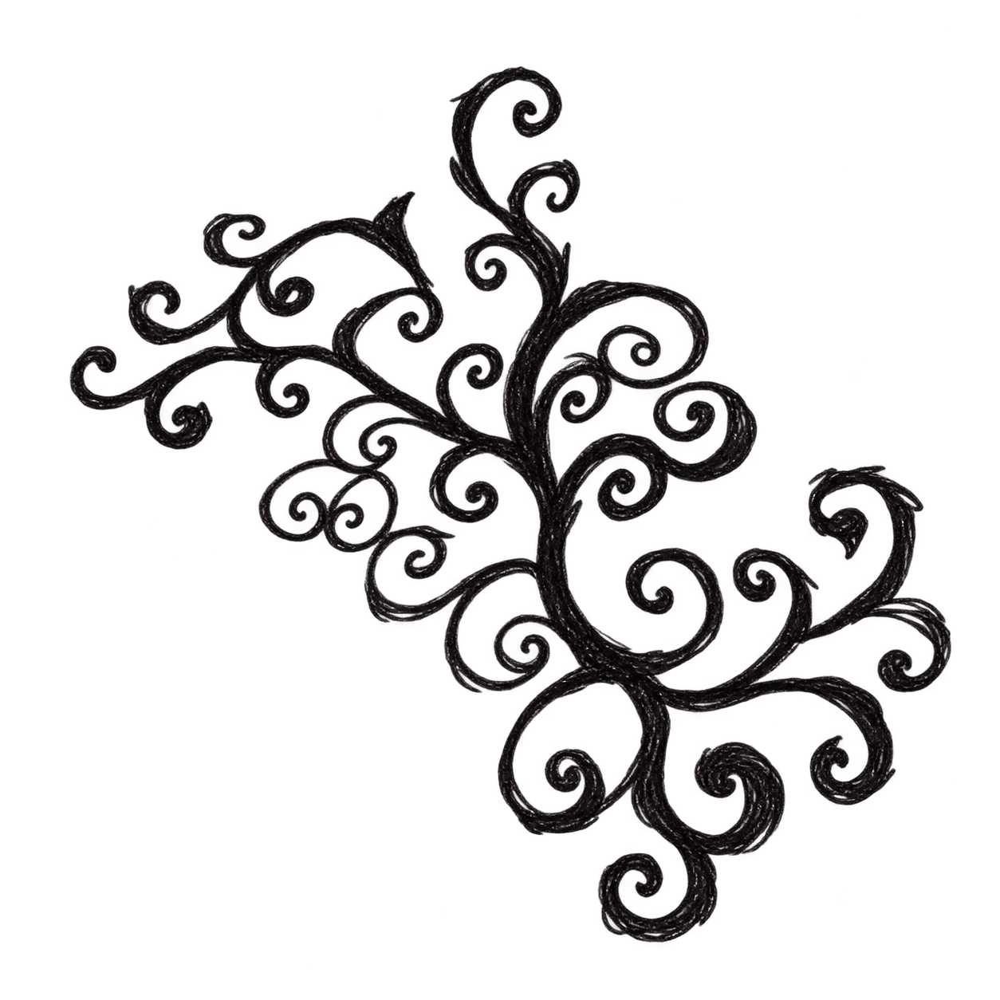
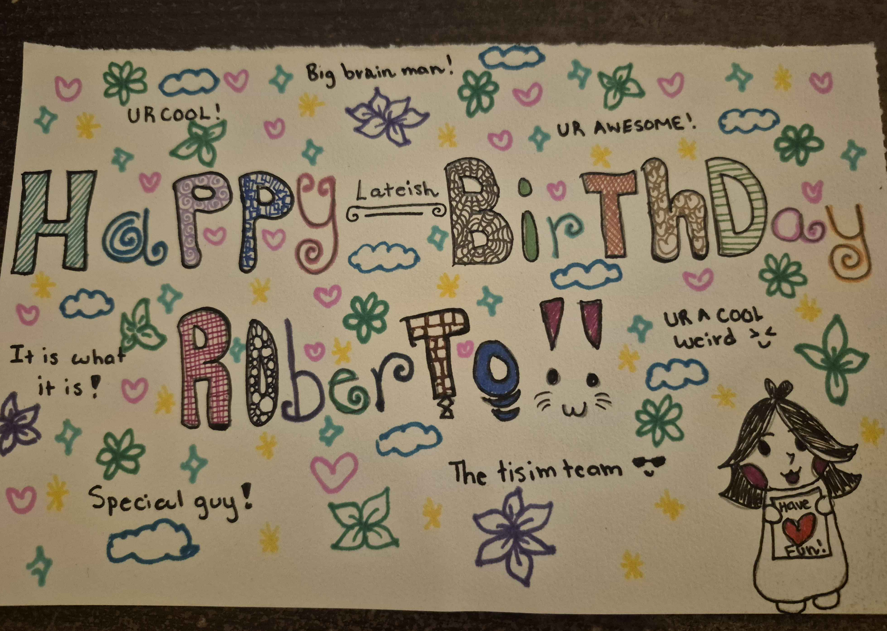
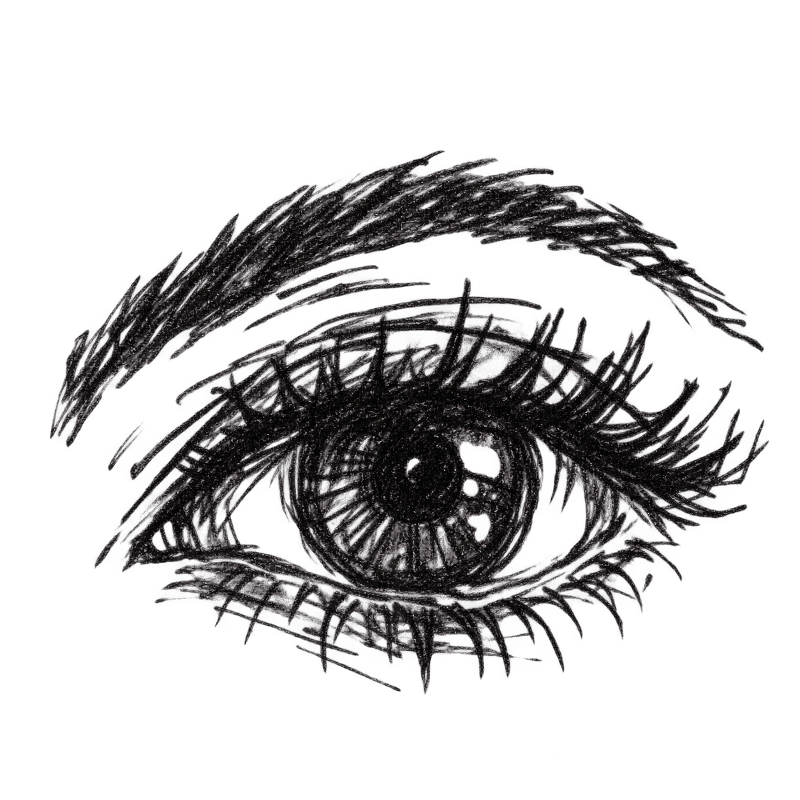
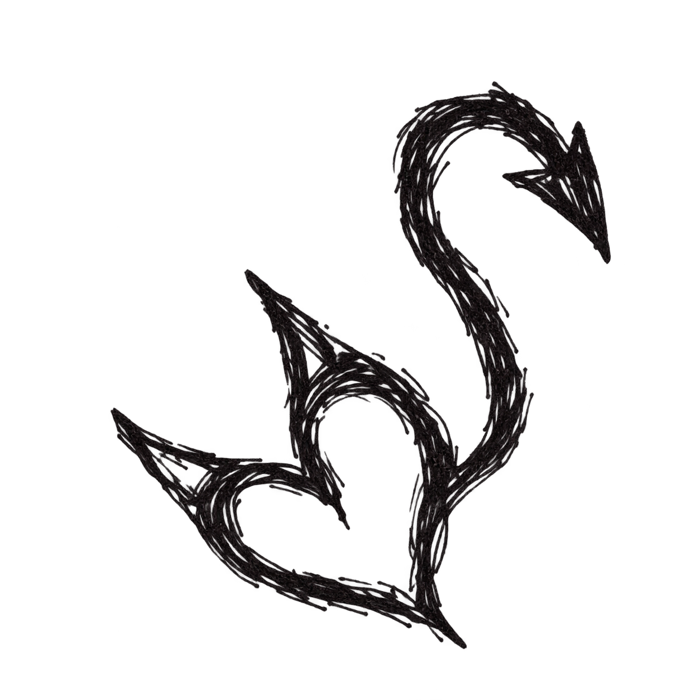
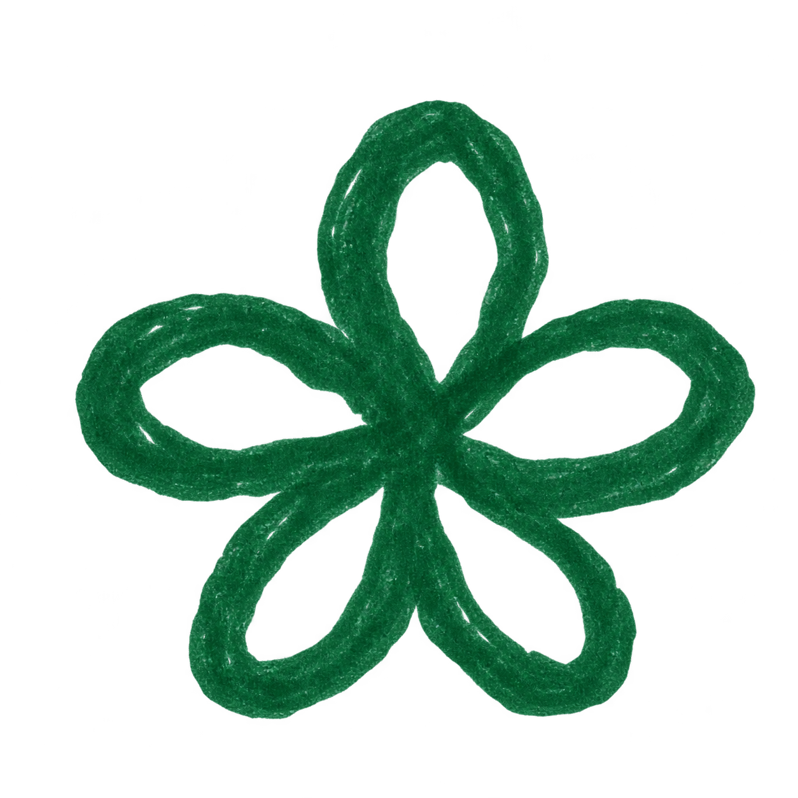
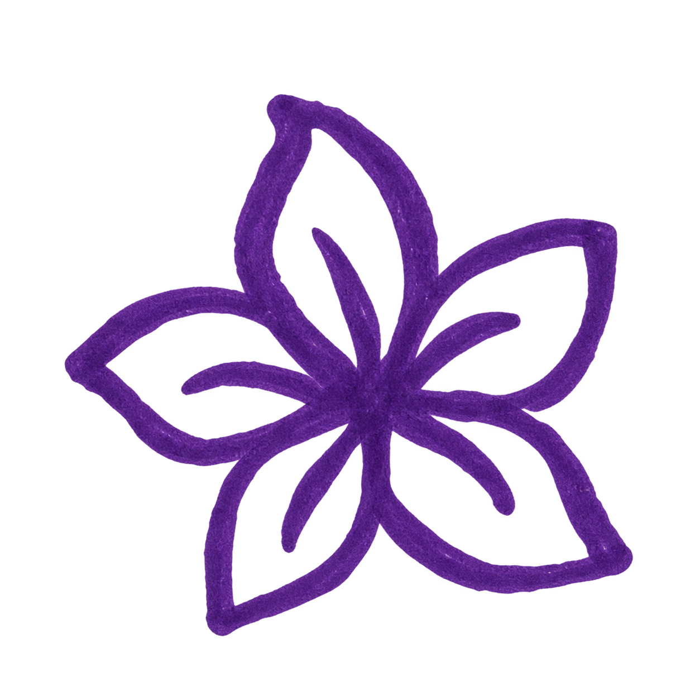
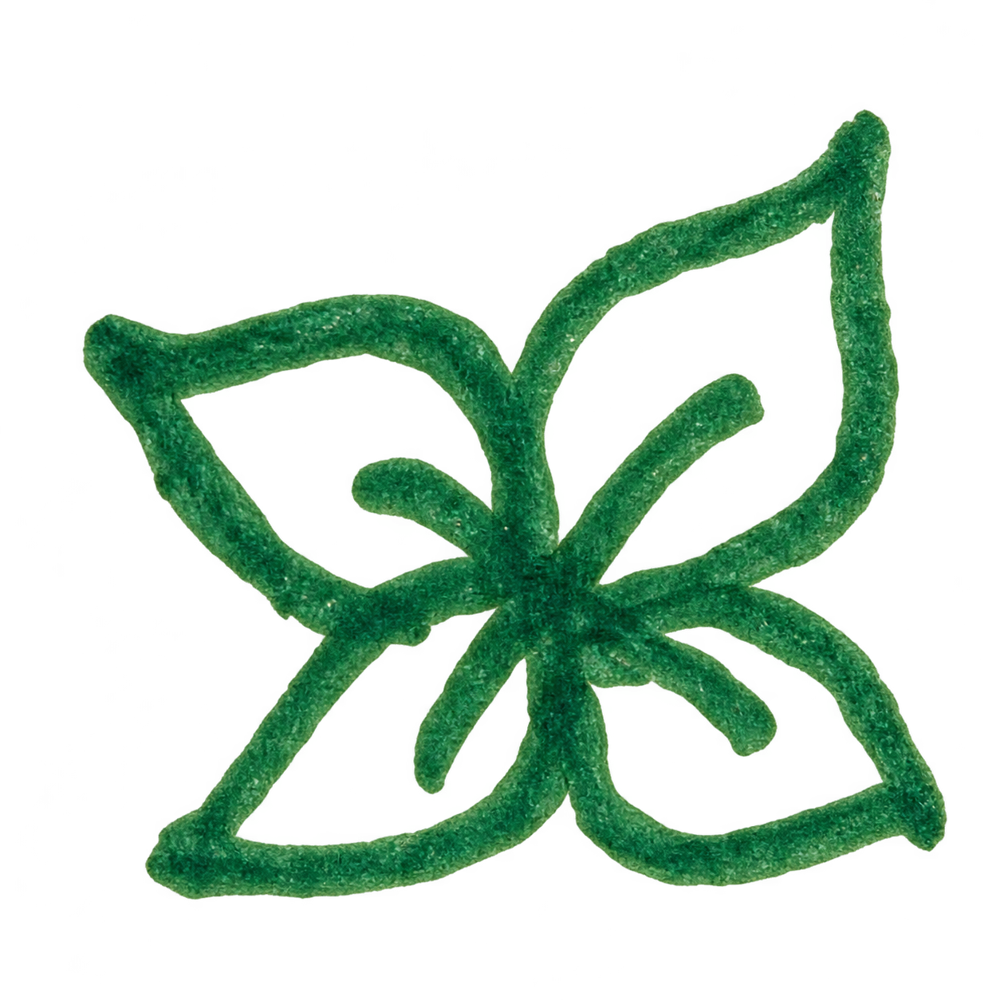
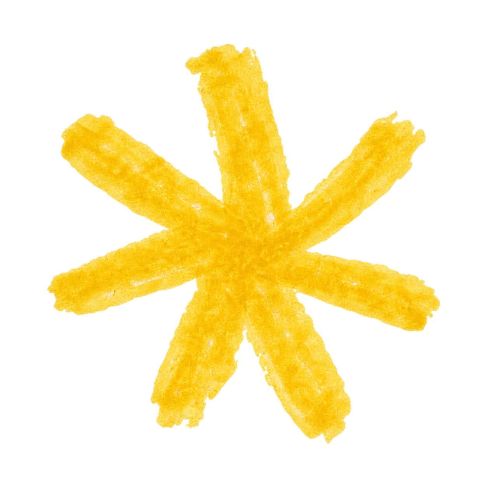
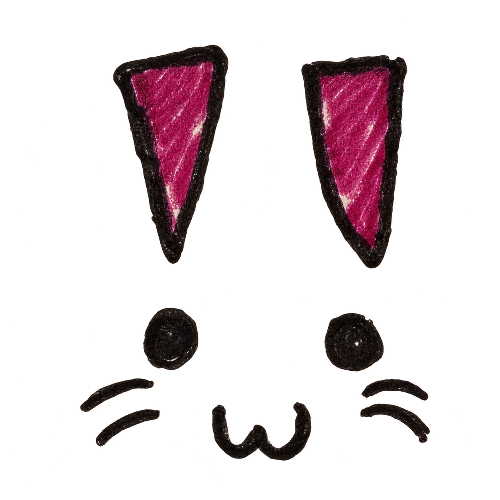

The Extremely Prestigious
Eliza Museum of Art
Current holdings remain incomplete. Curatorial expansion is expected.









The Extremely Prestigious
Current holdings remain incomplete. Curatorial expansion is expected.







